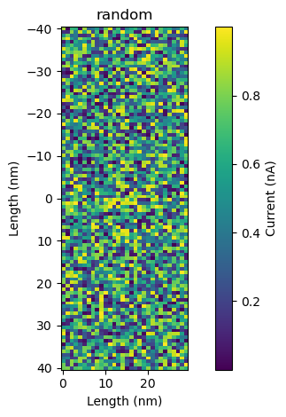

[1]:
#%pylab widget
import h5py
import sidpy
import numpy as np
import sys
sys.path.insert(0, '../../')
import pyNSID
[2]:
from SciFiReaders.readers.SID.Nsid_reader import NSIDReader
from SciFiReaders.readers.SID.Nsid_writer import NSIDWriter
[3]:
datasets = {}
[4]:
dataset = sidpy.Dataset.from_array(np.random.random([100, 100]), name='new')
dataset.data_type = 'IMAGE'
dataset.units = 'nA'
dataset.quantity = 'Current'
dataset.title = 'random'
counts_data = np.zeros(4)
dataset.set_dimension(0, sidpy.Dimension(np.arange(dataset.shape[0]), 'x',
units='nm', quantity='Length',
dimension_type='spatial'))
dataset.set_dimension(1, sidpy.Dimension(np.linspace(-40, 40, num=dataset.shape[1], endpoint=True), 'y',
units='nm', quantity='Length',
dimension_type='spatial'))
dataset.original_metadata['NXinstrument'] ={'NXdetector': {'nx_dataset': {'name': 'counts',
'data': counts_data,
'attrs': {"units": "counts"}}}}
dataset.metadata = {'array':np.array([1,2,3,])}
datasets['Channel_000'] = dataset
[5]:
dataset = sidpy.Dataset.from_array(np.random.random([30, 100]), name='new')
dataset.data_type = 'IMAGE'
dataset.units = 'nA'
dataset.quantity = 'Current'
dataset.title = 'random'
counts_data = np.zeros(4)
dataset.set_dimension(0, sidpy.Dimension(np.arange(dataset.shape[0]), 'x',
units='nm', quantity='Length',
dimension_type='spatial'))
dataset.set_dimension(1, sidpy.Dimension(np.linspace(-40, 40, num=dataset.shape[1], endpoint=True), 'y',
units='nm', quantity='Length',
dimension_type='spatial'))
dataset.original_metadata['NXinstrument'] ={'NXdetector': {'nx_dataset': {'name': 'counts',
'data': counts_data,
'attrs': {"units": "counts"}}}}
dataset.metadata = {'array':np.array([1,2,3,])}
[6]:
datasets['Channel_001'] = dataset
[7]:
dataset.plot();

[16]:
dataset.metadata
[16]:
{'array': array([1, 2, 3])}
[9]:
w = NSIDWriter(datasets)
[10]:
w.write("test_nsid.hf5", overwrite=True)
/Users/borisslautin/miniconda3/envs/aespm/lib/python3.11/site-packages/pyNSID/io/hdf_utils.py:381: FutureWarning: validate_h5_dimension may be removed in a future version
warn('validate_h5_dimension may be removed in a future version',
[10]:
'test_nsid.hf5'
[11]:
r = NSIDReader('test_nsid.hf5')
read_file = r.read()
[12]:
read_file
[12]:
{'Channel_000': sidpy.Dataset of type IMAGE with:
dask.array<array, shape=(100, 100), dtype=float64, chunksize=(100, 100), chunktype=numpy.ndarray>
data contains: Current (nA)
and Dimensions:
x: Length (nm) of size (100,)
y: Length (nm) of size (100,),
'Channel_001': sidpy.Dataset of type IMAGE with:
dask.array<array, shape=(30, 100), dtype=float64, chunksize=(30, 100), chunktype=numpy.ndarray>
data contains: Current (nA)
and Dimensions:
x: Length (nm) of size (30,)
y: Length (nm) of size (100,)}
[14]:
read_file['Channel_001'].plot();

[15]:
read_file['Channel_000'].metadata
[15]:
{}
[ ]: